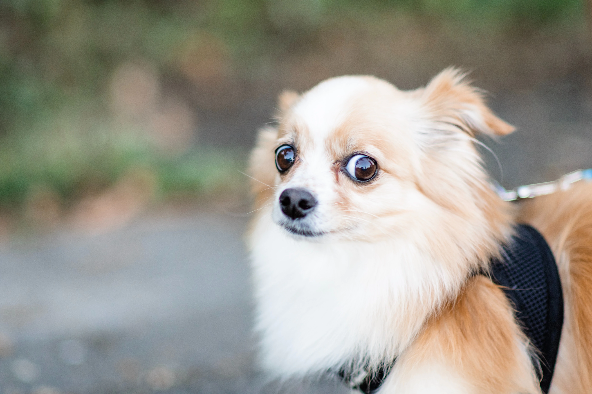
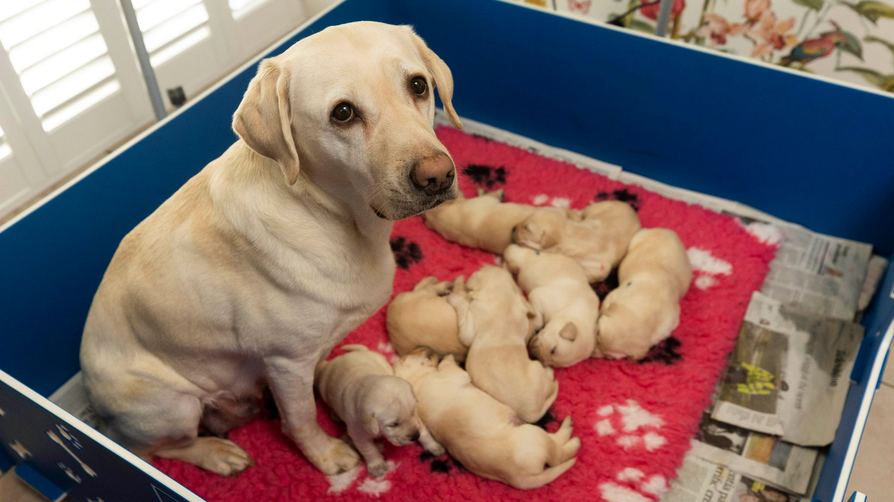
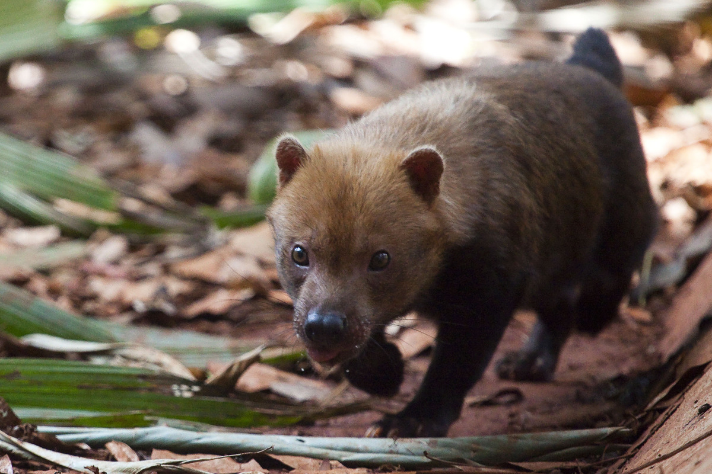
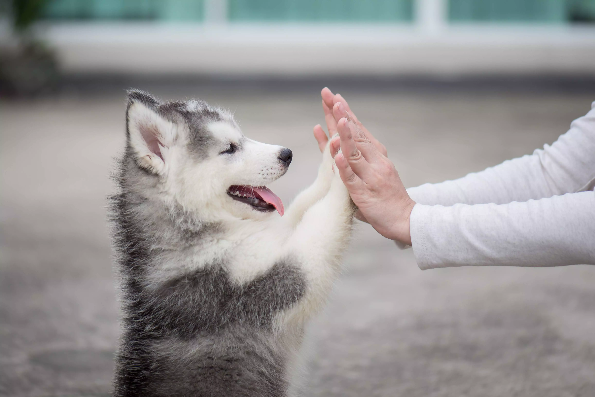
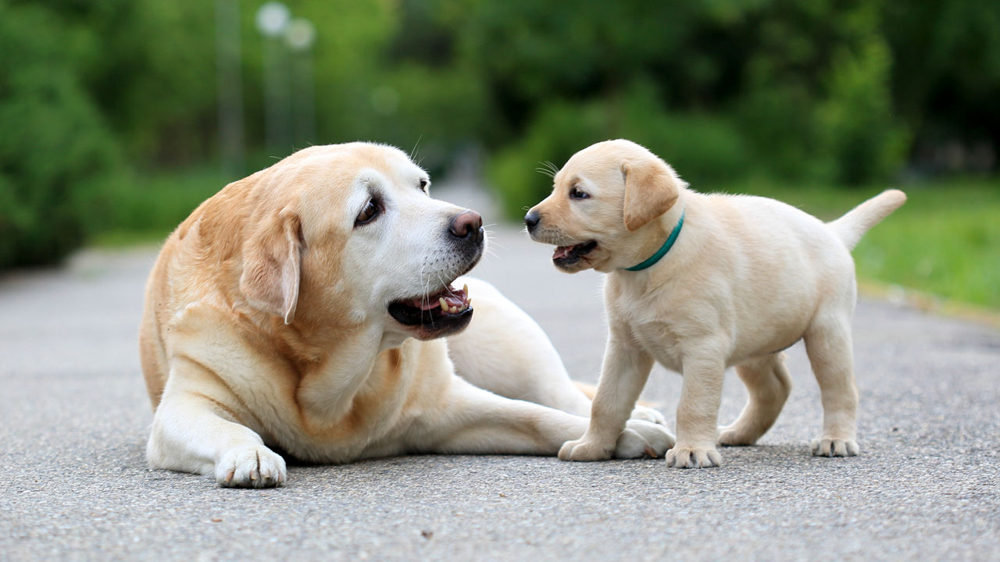
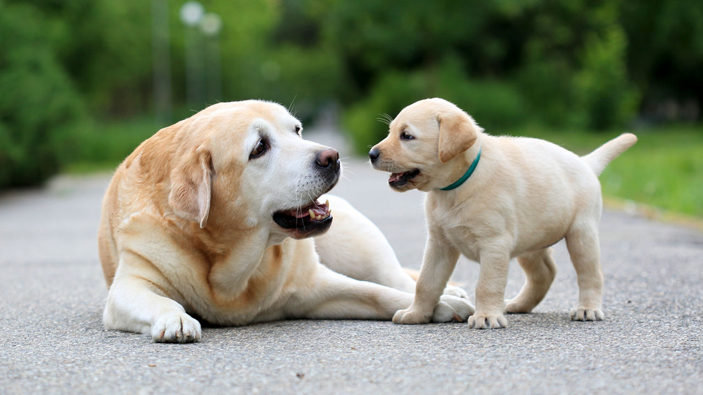

Este é um website de exemplo. Você pode falar sobre qualquer tema, desde que não infrinja a Constituição Federal Brasileira de 1988 e as normas e éticas do SESI/SENAI. O meu website será sobre cachorros, pois adoro cachorros.
Para começar, vamos ver algumas fotos para fins propagandísticos do animal em questão.
   Os cães são animais totalmente adaptados ao convívio com os seres humanos, mas para chegar ao estágio atual, os animais passaram por diversas fases evolutivas. Uma história que começou há cerca de 20 mil anos, quando ainda nem latiam e não podiam ser considerados cachorros. Na primeira reportagem da série "Mundo Pet", o TEM Notícias mostra como foi esse processo.
Os cães que conhecemos são descendentes dos lobos, o que muita gente discute é como parte deles se aproximou do homem e acabou domesticado. De acordo com a Sociedade Brasileira de Cinófilos (Sobraci), são várias teorias e, segundo o vice-presidente da instituição, esse laço histórico teve um início ruim. “Não foi uma amizade com um começo fácil. Era um jogo de interesses para ambas as partes”, afirma Éric de Moraes Bastos.
Nos anos que se seguiram, os homens deixaram de viver somente da caça e passaram a explorar a agricultura e a criar os animais que comeriam nas refeições, como ovinos e bovinos. Os cães perderam a função e tiveram que se adaptar. Passaram de caçadores a pastores. Para isso, foi feita mais uma seleção genética.
Era preciso cruzar somente os cães que tinham menos propensão de comer os rebanhos e eles passaram a trabalhar. “Enquanto o pastoreiro você precisa de um cão forte que imponha respeito frente ao bando, não pode se trabalhar com um animal que tem uma agressividade maior. Ele tem que ser territorialista sem demonstrar perigo para o rebanho”, ressalta o vice-presidente da Sobraci.
Segundo o adestrador Duval Ramos, o rottweiller, como conhecemos hoje, era um cão usado para cuidar de rebanhos de gado. “Ele foi desenvolvido para ser um cão boiadeiro, mas ele é adaptado para o trabalho de guarda. Assim como quase todas as raças, com exceção do doberman que tem uma propensão genética muito maior para a função, todos trabalham com a segurança”, comenta o adestrador.
A humanidade seguiu evoluindo e o cão virou apenas um animal de estimação. Em sua maioria, integrantes da família, mas sem nenhuma função econômica. Não comem mais carne crua e sim ração desenvolvida especialmente para eles. Hoje, as antigas feras são o que chamamos de PET: conceito nascido na Escócia, no século 14 e que significa basicamente animal domado."
Informações obtidas no site do G1.
É de tempos que o cão se relaciona com o homem. Através deste convívio, observam-se momentos positivos e negativos. Na cultura, povoa a realidade com heróis, companheiros de passatempo e de trabalho, os sonhos e como úteis cobaias; na Mitologia, o canino também está presente, desde a ocidental à oriental; e, na ficção, figura em filmes, desenhos animados, seriados de televisão, livros e revistas:
De entre os discípulos de Sócrates uma corrente de pensamento passou à história com o nome de cinismo, que deriva do Ginásio Cinosargos, onde pregara Antístenes de Atenas ou, segundo outros autores, da palavra em grego para cão (Kynos), que seria o animal que seus adeptos tinham por exemplo como forma de vida ideal — na busca pela felicidade o homem só a obtém pela vida simples, com desprezo pelas riquezas e prazeres.[104] O cínico mais notável foi Diógenes de Sínope que, além da corrente filosófica de nome "canino" também se identificava com o cão: conta-se que ele, morando num tonel, foi saudado por Alexandre Magno; este apresentou-se como um rei de quem as pessoas imputavam certa fama. Diógenes respondera-lhe ser "um cão, de quem dizem alguma coisa"; questionado pelo imperador por que se dava um nome tão "baixo", este respondera ser "porque eu adulo os que me dão, ladro contra os que me recusam e mordo os maus".
Informações obtidas no Wikipédia.

 
